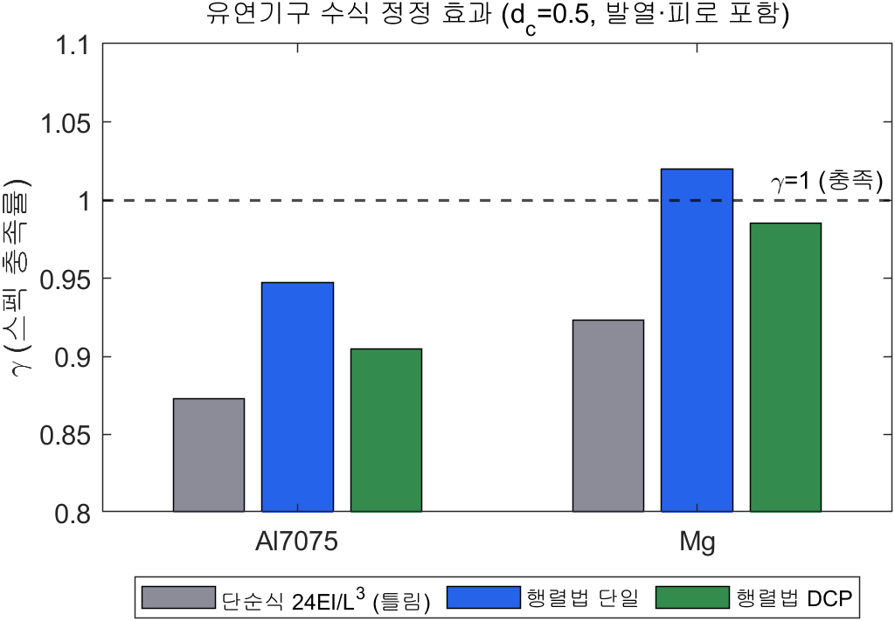
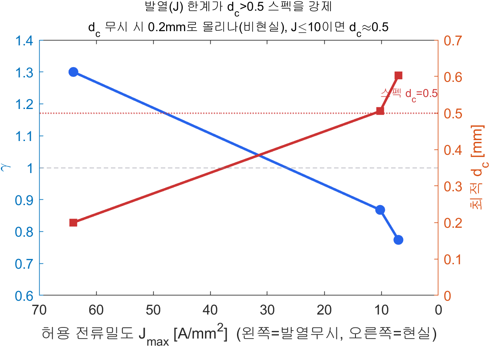
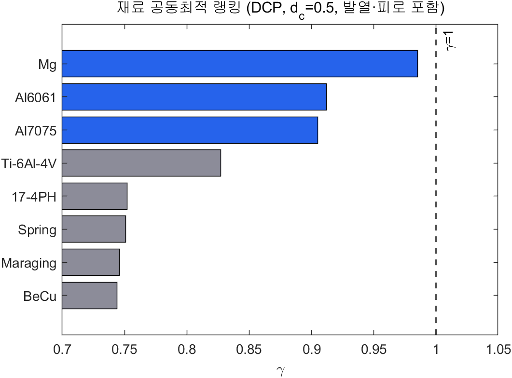
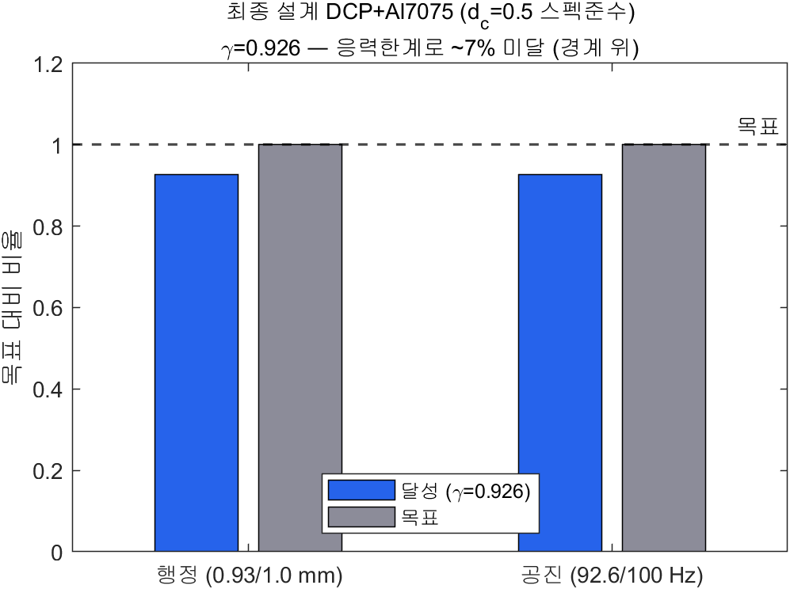

보이스코일로 구동하는
이중 복합 평행판 유연 스테이지
VCM 구동 1자유도 직선 정밀 스테이지를 유연기구–VCM 공동최적화로 설계하고, 모든 수식과 누락 물리를 전수감사하여 검증한 기록입니다. 그 과정에서 두 모델 오류(단순 강성식·발열 누락)를 발견·정정하였고, 발열까지 정직하게 반영했을 때 본 스펙이 물리적 실현가능성 경계에 위치함을 정량적으로 규명했습니다.
개요와 요구사양
"작은 부피에서 큰 행정과 높은 공진을 동시에" — 게다가 굵은 코일선까지. 이 제약들이 어떻게 맞물리는지를 정직하게 따진다.
| 항목 | 기호 | 요구 조건 | 비고 |
|---|---|---|---|
| 외형 크기 | — | ≤ 200 × 200 × 20 mm | 구동기 포함 |
| 행정(stroke) | $x$ | > 1 mm | 편측 기준 |
| 1차 공진 | $f_1$ | > 100 Hz | 대역폭 |
| 구동 전류 | $I$ | = 2 A | 고정 |
| 코일 선경 | $d_c$ | > 0.5 mm | 제작성(=발열 한계, §4) |
행정과 공진은 강성 $k$를 두고 정면충돌하고($x\propto 1/k$, $f_1\propto\sqrt{k}$), 코일선 굵기 $d_c$는 추력과 발열을 동시에 좌우한다. 이 보고서의 핵심은 단순 모델로 성급히 결론내지 않고, 모든 수식과 누락 물리를 전수감사해 정정한 과정 자체다.

개념설계 · 이중 복합 평행판
중앙 플랫폼 + 전폭 상하 바 + 양옆 4 지점핀 + 16 힌지 — 강의/검증된 올바른 DCP 구조.
단일 평행판은 큰 변위에서 호 형태로 휘어 수직 기생변위 $\delta_y\approx x^2/2L$가 생긴다. 복합(compound)은 중간 stage로 이를 1차 상쇄(직선화)하고, 이중복합(DCP)은 대칭 한 쌍으로 잔류오차·기울어짐까지 억제한다. DCP 정강성은 직렬(복합)×병렬(이중)이 상쇄돼 단일과 동급이지만, 각 단이 행정의 절반만 부담해 응력이 절반이 된다.

해석 모델 · 행렬법 · FEMM · 발열
유연기구는 컴플라이언스 행렬법으로, VCM은 FEMM 검증 surrogate로, 그리고 발열까지 결합한다.
각 힌지의 국부 컴플라이언스 $C_h$를 연결벡터 변환 $T$·회전 $R$로 전역으로 옮겨 강성을 합성한다. 운동방향 강성 $K_{\text{eff}}=K_{yy}$, 공진은 질량행렬 고유치로 구한다:
$$ K=\sum_i\big(T_iR_iC_hR_i^TT_i^T\big)^{-1},\qquad f_1=\frac{1}{2\pi}\sqrt{\lambda_1(K,M)} $$초기에 쓴 단순 보 강성식 $k_x=24EI/L^3$은 이 행렬법 대비 강성을 비관적으로 추정한다 (§4에서 정정).
퍼미언스 자기회로로 공극 자속 $B_g$·추력 $F=n_{\text{eff}}B_gL_mI$를 얻되, 해석모델이 극단 형상에서 $B_g$를 비현실적으로 과대평가하므로 FEMM 축대칭 48점 해석으로 N52 자석의 $B_g(r_m,h_{y1},t_g)$ 2차 다항 surrogate를 적합($R^2=0.996$)해 대체한다.
고정전류 $I=2$A에서 코일 전류밀도 $J=I/(\tfrac\pi4 d_c^2)$는 가는 선일수록 급증한다. 연속운전 한계 $J\le10$ A/mm²를 제약으로 추가한다 — 이 항이 누락되면 가는 선이 부당하게 유리해진다(§4).
전수감사와 두 오류의 정정
결론이 자꾸 같은 곳으로 가자, 모든 수식을 전수조사했다. 두 개의 결정적 오류가 나왔다.
동일 조건($d_c=0.5$·발열·피로)에서 단순식 $24EI/L^3$은 $\gamma=0.87$로 불가라 했지만, 검증된 행렬법은 $\gamma=0.95\sim1.02$로 경계로 끌어올린다. 초기의 "$d_c>0.5$ 불가" 결론은 상당 부분 잘못된 강성식 탓이었다.

발열을 무시하니 가는 선이 부당하게 유리했다. 권장 후보였던 $d_c=0.3$mm는 실제 $J=28$ A/mm²(연속한계의 약 3배)로 열적으로 불가하다. $J\le10$ 제약 하에 $d_c$를 자유화하면 최적 선경이 $d_c=0.505$mm로 수렴 — 즉 $d_c>0.5$ 스펙은 발열 한계의 proxy다.

공동최적화 · flexure ↔ VCM
두 학문이 코일질량·강성·힘상수로 얽혀 있어, 따로 풀면 진짜 최적이 안 나온다.
VCM의 코일질량($\to$공진)·힘상수($\to$변위)와 유연기구의 강성·질량이 결합된다. epigraph로 $\max\gamma$ s.t. $x=K_fI/K_{\text{eff}}\ge\gamma x_{\text{req}}$, $f_1\ge\gamma f_{\text{req}}$, 발열·피로·포화·크기 제약. 일괄(monolithic)을 기준으로 반복(block-coordinate)과 교차검증했다(반복법은 multi-start 필수 — 초기값에 따라 0.975 vs 1.00).
반전: 최적해는 "강한 VCM"이 아니라 "부드러운 유연기구 + 가볍고 약한 VCM"이었다 — 두 학문을 함께 움직여야 보이는 해.
재료를 최적화 변수로 보고 8종을 공동최적화했다. 높은 항복변형 $S_y/E$(행정)와 낮은 밀도(공진)를 동시에 원하므로 Mg·Al7075가 상위. 실용성(가공·피로·취급)까지 고려해 Al7075-T6를 권장한다.

모델 검증
두 핵심 모델을 독립 기준으로 검증 — 행렬법과 FEMM.
① 유연기구 행렬법
4-힌지 기준예제를 정확히 재현: 변위 16.69μm@10N, 1차 공진 6043Hz, 가이드비 Kxx/Kyy=178. 행렬법 구현의 정확성 확인.
② 자기 FEA (FEMM)
해석모델은 자유 최적화 시 B_g=2.0T(비현실)를 주지만, FEMM은 기준형상 366mT(N52). surrogate $R^2=0.996$로 대체 정당화.


동특성과 제어
전기+전자기+기계 결합 플랜트를 Simulink로 구성하고 PID·Simscape로 검증.
권장 설계 파라미터($m_{\text{eff}}\approx7.8$g, $K_{\text{eff}}=2.0$kN/m, $K_f=1.04$N/A)로 전달함수 $G(s)=K_f/[(ms^2+cs+k)(Ls+R)+K_f^2s]$를 구성했다. 약 90Hz 공진을 재현하며, 역기전력 전기역학 감쇠가 실효 감쇠를 키운다. SQP-튜닝 PID에 2A 전류 포화를 포함한 폐루프로 스텝·스캐닝을 검증하고 Simscape로 교차검증했다.

최종 설계 · 실현가능성 경계
모든 물리(행렬법·FEMM·발열·피로·응력집중)를 반영한 권장 설계 — d_c=0.5 스펙 준수.
| 항목 | 값 | 목표 | 판정 |
|---|---|---|---|
| 충족률 γ | 0.93 | ≥ 1.0 | 경계 |
| 행정 @ 2A | 0.93 mm | > 1 | −7% |
| 1차 공진 $f_1$ | 92.6 Hz | > 100 | −7% |
| 코일 선경 $d_c$ | 0.5 mm | > 0.5 | 충족 |
| VCM 직경 | 20 mm | ≤ 20 | 충족 |
| 전류밀도 $J$ | 10.2 A/mm² | ≤ 10 | 한계 |
| 피로응력 | 101 MPa | $=0.2S_y$ | binding |
제원: 유연기구 $L{=}19.6$, $t{=}0.23$, $b{=}5$mm, 스테이지 15mm, $K_{\text{eff}}{=}2.0$N/mm, $M_{\text{eff}}{=}7.8$g; VCM $r_m{=}7.4$, $h_{y1}{=}4.0$, $t_g{=}1.8$mm(Ø20), $B_g{=}597$mT, $K_f{=}1.04$N/A, $m_{\text{coil}}{=}3.1$g.
